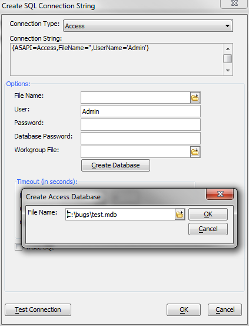

How to Create a SQL Database
In Alpha Anywhere, whenever you are building a new SQL Connection String for AlphaDAO, you have the option to create a new database.For example, from the Database Explorer press the + button to add a database, then pick Specify Connection String and press the Build button. You'll see a Create Database button that you can press on the next dialog. Navigate to or specify the database you want to create. Here we are creating an Access MDB file, but the same technique works for other database types.

If you press OK at this point, the database will be created, and the connection string options will be filled in for you.
At this point, you can go back and save the named connection. Then you can add tables to the database using a variety of methods both within and outside of Alpha Anywhere.